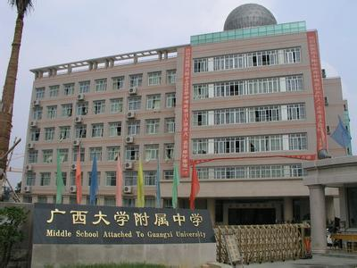

2008.9-2014.6 小学阶段
| 崇左市江州区江南第一小学 |
| 简称 |
江南一小 |
| 创办时间 |
1957年9月 |
| 地址 |
广西崇左县太平镇江南路69号 |
| 办学规模 |
学校占地面积58亩，截至2012年秋季学期有41个教学班，学生2436人，教职工136人。 |
2014.9-2017.6 初中阶段

| 广西大学附属中学 |
| 外文名称 |
Middle School Attached To Guangxi University |
| 简称 |
西大附中 |
| 创办时间 |
1934年 |
| 校训 |
为做人奠定基础，为成才积蓄力量 |
| 地址 |
广西南宁市大学东路100号 |
| 办学规模 |
截至2019年1月，广西大学附属中学有82个教学班，5200多名学生。截至2012年10月，校园占地总面积52亩(发展规划中的邕武校区占地300亩)，建筑面积31892平方米。 |
2017.9-2020.7 高中阶段
| 广西南宁市第三中学 |
| 外文名称 |
NO.3 High School Nanning Guangxi |
| 简称 |
南宁三中 |
| 创办时间 |
1897年 |
| 校训 |
敦品力学 |
| 地址 |
南宁市青山路5号 |
| 办学规模 |
截至2018年，南宁三中教育集团拥有六个校区
(南宁三中本部、南宁三中五象校区、南宁三中银海校区、南宁三中初中部青山校区、南宁三美学校、南宁三中平果分校、)。
其中南宁三中本部校园占地275亩，有60个班级，3221余名学生;南宁三中平果分校(又名平果第三高级中学)占地280多亩，
全校初高中共有47个班级，2140名学生;南宁三美学校占地32亩，2027名学生(截至2013年)。 |
2020.9-至今 大学阶段
| 中南财经政法大学 |
| 外文名称 |
Zhongnan University of Economics and Law |
| 简称 |
中南大（ZUEL） |
| 创办时间 |
1948年（戊子年） |
| 校训 |
博文明理 厚德济世 |
| 地址 |
湖北省武汉市东湖高新技术开发区南湖大道182号 |
| 办学规模 |
截至2017年11月，学校有全日制本科生20000余人，硕士生8100余人，
博士生1200余人，成人教育学生5000余人，每年接受来华留学生400余人次，拥有各层次外国留学生、
港澳台地区学生的招生权。 |